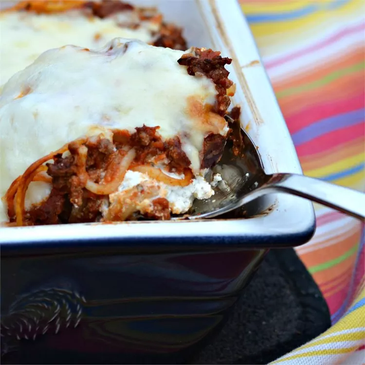

Spaghetti

Description
Spaghetti is a popular Italian dish that is enjoyed all over the world.
It is made by boiling long, thin noodles made of wheat flour and water until they are cooked al dente,
meaning they are still slightly firm to the bite.
Spaghetti can be served with a variety of sauces, such as tomato sauce, meat sauce, or pesto,
and can be topped with grated cheese or herbs.
It is a versatile dish that can be prepared quickly and easily,
making it a popular choice for busy weeknights or casual dinners with friends and family.
Spaghetti is a classic comfort food that is loved by people of all ages and cultures.
Ingredients
- 1 (8 ounce) package spaghetti
- 1 pound Italian sausage
- 1 (16 ounce) jar spaghetti sauce
- ½ cup butter, sliced - dived
- 1 (8 ounce) container cottage cheese
- 1 (8 ounce) package cream cheese, softened
- ¼ cup sour cream
- 1 (8 ounce) package shredded sharp Cheddar cheese
Steps
- Preheat the oven to 350 °F (175 °C)
-
Bring a large pot of lightly salted water to a boil.
Cook spaghetti in boiling water until cooked through but firm to the bite, about 12 minutes. Drain.
-
Heat a large skillet over medium-high heat.
Cook and stir beef in the hot skillet until browned and crumbly,
5 to 7 minutes; drain and discard grease.
Transfer to a bowl and mix in spaghetti sauce.
-
Place ½ of the butter slices into the bottom of a 9x13-inch casserole dish.
Spread ½ of the spaghetti into the dish.
-
Mix cottage cheese, cream cheese, and sour cream together in a bowl; spread mixture over spaghetti.
Cover with remaining spaghetti and top with remaining slices of butter.
-
Pour ground beef mixture over spaghetti and spread in an even layer.
-
Bake in the preheated oven for 30 minutes.
Spread Cheddar cheese on top and continue baking until cheese has melted and is lightly browned, about 15 minutes more.